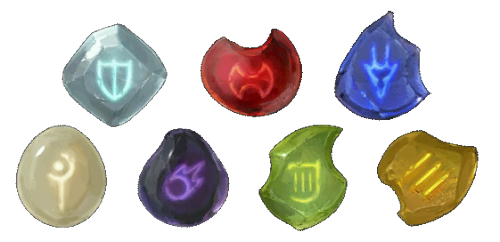
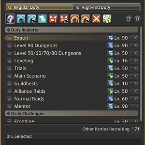

1-50 Leveling Tips!
Disclaimer: This leveling guide assumes you have already completed the story and want to level a fresh class without the exp and guidance from the story.
When you start leveling a class from level 1, you will begin as a "class" instead of a "job." For example, the warrior is a marauder until level 30, when they complete their class quests and get a job stone. Then, your class quests are turned into job quests.
Begin your leveling journey by starting the class quests, which can be found on the top left of your screen under your MSQ mission bar. Do the missions you can, and in between, you should go to a main city-leve quest giver(P.S they're called leve not level). The image below shows the icon you should look out for.
At level 15, you should also start doing dungeons that match your current level and do your daily roulettes. Ensure you continue to do the job quest for more abilities and upgrade your armor.
